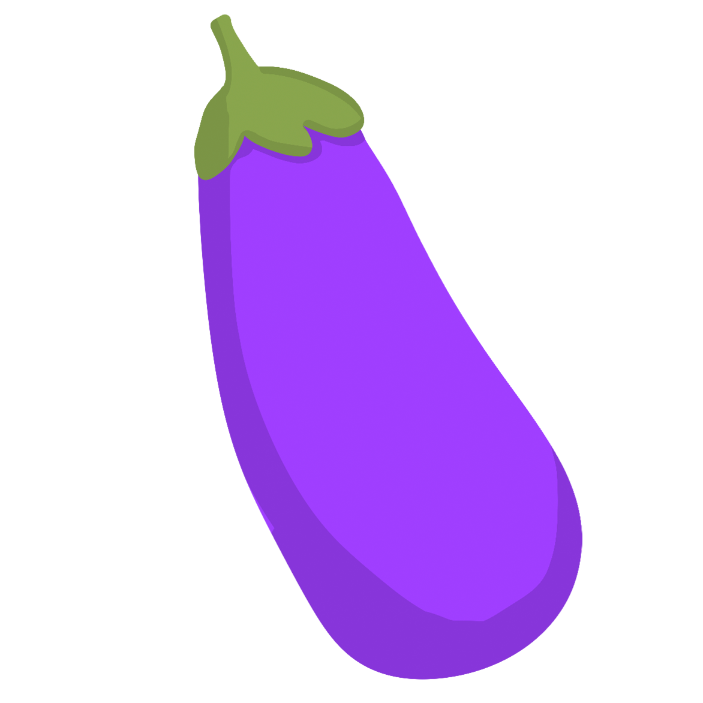
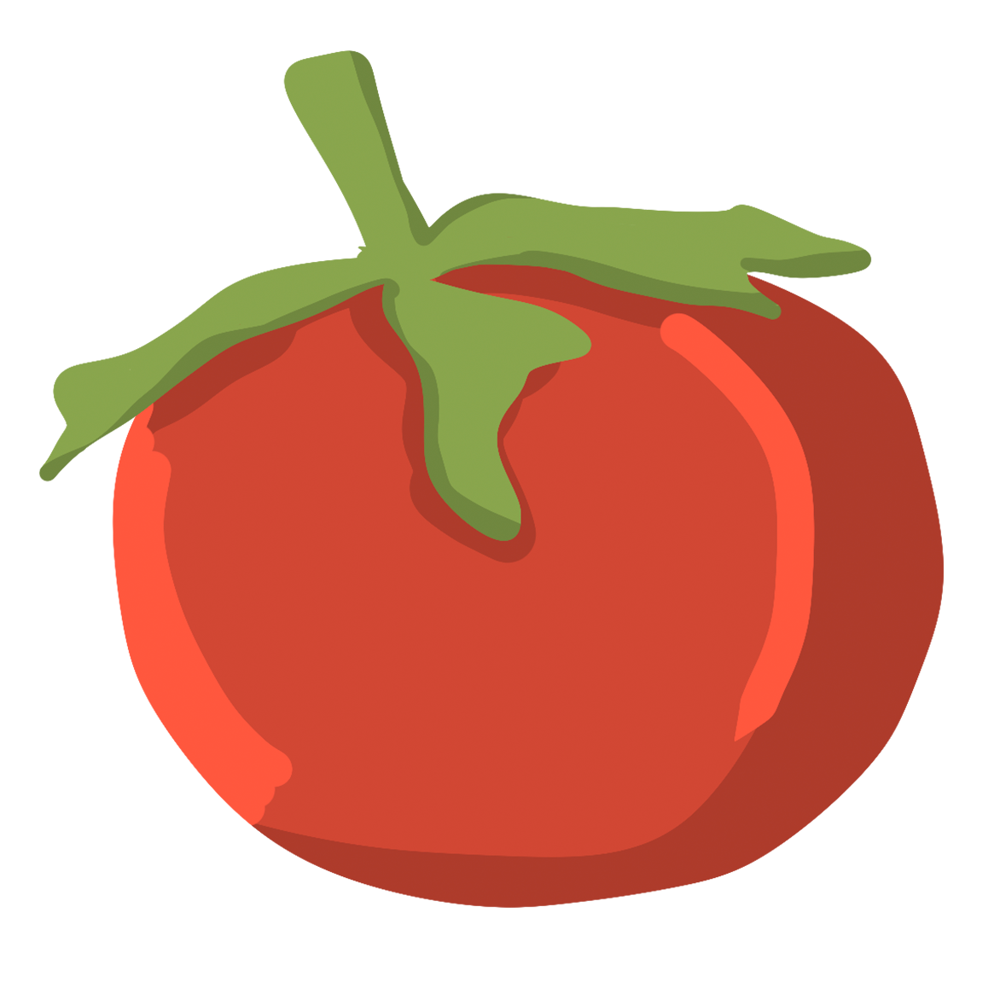
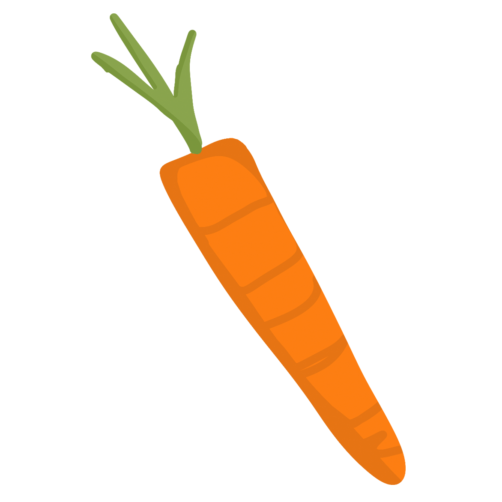

Klimaat
Biologische landbouw geen kunstmest en geen syntetische bestrijdingsmiddelen gebruikt. Dit is goed voor het klimaat, natuur en de bodemkwaliteit
Meer smaak
Biologisch eten is puurder. Dit komt omdat biologische producten de tijd krijgen om te groeien, te rijpen en op smaak te komen.
Minder kans op ziektes
Door een veganistisch eetpatroon zou je minder kans hebben op hart en vaatziektes en kanker.
Gezonder
Plantaardig eten zit vol met goede voedingsstoffen zoals mineralen, vitamines, vezels en anti-oxidanten